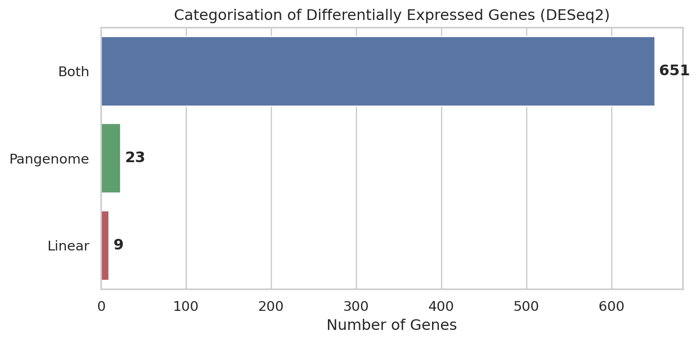

Graph pangenomes rescue reference bias and reveal additional differentially expressed genes in an Arabidopsis drought stress experiment
Author
Eirinn Mackay
Introduction
This report compares the results of differential gene expression analysis performed using a linear reference genome (TAIR10, Arabidopsis thaliana, accession Col-0) and a pangenome reference (constructed from 79 Arabidopsis accessions with geographic category “Asia” from the 1001 Genomes Project). The RNA-seq experiment and dataset comes from Bu et al, 2026 and involved exposing plants from the Ara-1 accession (belonging to the Asia subpopulation) to drought stress and comparing gene expression between control and stressed conditions. The goal is to identify genes that were differentially expressed in the pangenome analysis but not in the linear genome analysis, as a means of highlighting the effect of reference bias and the value of utilising pangenomes for RNA-seq experiments.
The pangenome was assembled using the TAIR10 reference genome together with variants from the 79 accessions. The coordinate system was the same as TAIR10.
RNA-seq samples were downloaded from the SRA (BioProject PRJCA058957) and aligned to both the linear and pangenome references using Hisat2. Read counts per gene and coverage metrics were obtained using StringTie, and differential expression analysis was performed using DESeq2 in R. The RNA-seq dataset was limited to 2 samples per condition, which restricted statistical power and the ability to detect significant DEGs, but this was sufficient for the purpose of demonstrating the impact of reference bias and the utility of pangenomes for RNA-seq analysis.
flowchart TD
%% Inputs
SRA([RNA-seq reads<br/>from SRA])
FASTA([TAIR10<br/>FASTA])
GTF([Araport11<br/>GTF])
VCF([1001 Genomes<br/>VCF])
ACC([Accession<br/>list])
%% QC
SRA --> FASTP["FASTP<br/>QC & trimming"]
%% Linear reference branch
FASTA --> HISAT2_INDEX["HISAT2<br/>Build linear index"]
GTF --> HISAT2_INDEX
%% Pangenome reference branch
VCF --> BCFTOOLS["BCFTOOLS<br/>Extract subpopulation variants"]
ACC --> BCFTOOLS
FASTA --> PAN_INDEX["HISAT2<br/>Build graph pangenome index"]
BCFTOOLS --> PAN_INDEX
GTF --> PAN_INDEX
%% Alignment (both references)
FASTP --> ALIGN["HISAT2<br/>Align reads to genome"]
HISAT2_INDEX --> ALIGN
PAN_INDEX --> ALIGN
%% Downstream outputs
ALIGN --> STRINGTIE["STRINGTIE<br/>Transcript quantification<br/>(TPM)"]
GTF --> STRINGTIE
ALIGN --> FC["FEATURECOUNTS<br/>Read counts per gene"]
GTF --> FC
%% DESeq2
FC --> DESEQ2["DESEQ2<br/>Differential expression<br/>(linear and pangenome)"]
%% Styling
classDef input fill:#d6eaf8,stroke:#2e86c1,color:#000
classDef process fill:#d5f5e3,stroke:#1e8449,color:#000
classDef output fill:#fdebd0,stroke:#ca6f1e,color:#000
class SRA,FASTA,GTF,VCF,ACC input
class FASTP,HISAT2_INDEX,BCFTOOLS,PAN_INDEX,ALIGN process
class STRINGTIE,FC,DESEQ2 output
Flowchart illustrating the Nextflow pipeline for generating a graph pangenome from a list of accession numbers, followed by aligning RNA-seq reads and performing differential expression analysis.
Code
import pandas as pdimport seaborn as snsimport numpy as npfrom matplotlib import pyplot as pltfrom dataloader import ( load_gene_table, load_deseq_table, merge_deseq_tables, load_stringtie_coverage, calculate_coverage_rescue, fetch_coverage, fetch_exons,)# define paths to data filesDATA_DIR ="../data"GENE_TABLE_PATH = DATA_DIR +"/TAIR10/ensembl_gene_names.txt"DESEQ2_RESULTS_DIR = DATA_DIR +"/results/latest/deseq2/"STRINGTIE_RESULTS_DIR = DATA_DIR +"/results/latest/stringtie/"CRAM_DIR = DATA_DIR +"/results/latest/cram/"BIGWIG_DIR = DATA_DIR +"/results/latest/bigwig/"# specific definitions for this experimentLINEAR_GENOME_NAME ="TAIR10"PANGENOME_NAME ="asia"TARGET_ACCESSION_NUM ="10015"# this is the ID for Ara-1 (Shahdara-1), the accession used in this experimentTARGET_VARIANTS_VCF = DATA_DIR +f"/VCF/accession_{TARGET_ACCESSION_NUM}.vcf.gz"ANNOTATIONS_GTF = DATA_DIR +"/TAIR10/Araport11_GTF_genes_transposons.Mar202021.gtf.gz"# sample name and conditions for the rnaseq experiment (Ara-1 plants were exposed to drought stress)SAMPLE_INFO = [ {"sample_name": "A", "condition": "control"}, {"sample_name": "B", "condition": "control"}, {"sample_name": "C", "condition": "stressed"}, {"sample_name": "D", "condition": "stressed"}]# load gene names from pregenerated table from ensembl biomart gene_table = load_gene_table(GENE_TABLE_PATH)# load coverage values from stringtie results for both linear and pangenome analyses, then calculate coverage rescue ratios# (i.e. coverage in pangenome / coverage in linear genome) for each genecoverage_df = load_stringtie_coverage(STRINGTIE_RESULTS_DIR, SAMPLE_INFO, [LINEAR_GENOME_NAME, PANGENOME_NAME])gene_rescue_df = calculate_coverage_rescue(coverage_df, LINEAR_GENOME_NAME, PANGENOME_NAME)# load deseq2 results for both linear and pangenome analyses, # then generate merged table of DEGs with gene names and descriptionslinear_deseq = load_deseq_table(f"{DESEQ2_RESULTS_DIR}{LINEAR_GENOME_NAME}_deseq2_results.csv")pangenome_deseq = load_deseq_table(f"{DESEQ2_RESULTS_DIR}{PANGENOME_NAME}_deseq2_results.csv")de_table = merge_deseq_tables(linear_deseq, pangenome_deseq, gene_table)# Now we have coverage rescue ratios per gene and DEG status per gene.# Merge into a single dataframe for analysiscomplete_df = gene_rescue_df.merge(de_table, left_index=True, right_index=True, how="inner")# column names are: ['mean_rescue', 'std_rescue', 'log2FoldChange_linear', 'padj_linear',# 'log2FoldChange_pangenome', 'padj_pangenome', 'DEG_status', 'DE_linear', 'DE_pangenome',# 'Gene description', 'Gene name', 'Chromosome/scaffold name',# 'Gene start (bp)', 'Gene end (bp)']# for convenience, subset this to just DEGsdeg_df = complete_df[complete_df["DEG_status"] !="neither"]
Analysis
Differential Expression counts
Code
# prepare data for plottingstatus_counts = deg_df["DEG_status"].value_counts().reset_index()status_counts.columns = ["Category", "Count"]# map internal names to display names if necessaryrename_dict = {"both": "Both", "pangenome": "Pangenome", "linear": "Linear"}status_counts["Category"] = status_counts["Category"].map(rename_dict)# sort for consistent displaystatus_counts = status_counts.set_index("Category").loc[["Both", "Pangenome", "Linear"]].reset_index()# generate horizontal barplot# Note: Passing `palette` without assigning `hue` is deprecated and will be removed in v0.14.0. Assign the `y` variable to `hue` and set `legend=False` for the same effect.plt.figure(figsize=(8, 4))sns.set_theme(style="whitegrid")ax = sns.barplot( data=status_counts, y="Category", hue="Category", x="Count", palette={"Both": "#4c72b0", "Pangenome": "#55a868", "Linear": "#c44e52"}, legend=False)# add labels and titleax.set_xlabel("Number of Genes")ax.set_ylabel("")ax.set_title("Categorisation of Differentially Expressed Genes (DESeq2)")# annotate bars with countsfor i, count inenumerate(status_counts["Count"]): ax.text(count +5, i, str(count), va='center', fontweight='bold')plt.tight_layout()plt.show()

Figure 1: Counts of Differentially Expressed Genes (DEGs) by analysis category. ‘Pangenome’ and ‘Linear’ referred to genes found to be DE only in that specific analysis, while ‘Both’ referred to genes identified as DE in both analyses.
Genes were considered differentially expressed at adjusted p-value < 0.05 using DESeq2 Wald tests. DESeq2 identified 651 differentially expressed genes (DEGs) in both sets of alignments (Figure 1). An additional 23 DEGs were identified in the pangenome analysis and missed in the linear genome analysis, while only 9 DEGs were unique to the linear genome analysis. This suggested that the pangenome reference could recover alignment coverage for highly variant genes, potentially increasing sensitivity for differential expression detection.
Coverage Rescue
SNPs and indels in the target accession (Ara-1) would lead to reduced read coverage for those genes when aligning to the linear reference. By providing a better representation of the genetic diversity in the sample, the pangenome reference increased (rescued) coverage for highly variant genes.
To demonstrate this, we calculated the log2 ratio of coverage in the pangenome alignment to coverage in the linear genome alignment for each gene. A positive value indicated that the pangenome provided increased aligned coverage for that gene compared to the linear reference. We then compared this rescue ratio across different categories of DEGs (those found in both analyses, those unique to the pangenome analysis, and those unique to the linear analysis) to see if there was a relationship between DEG status and coverage rescue.
Code
plt.figure(figsize=(8, 6))sns.set_theme(style="whitegrid")# Define category order and palette to match Figure 1category_order = ["both", "pangenome", "linear"]rename_dict = {"both": "Both", "pangenome": "Pangenome", "linear": "Linear"}color_palette = {"both": "#4c72b0", "pangenome": "#55a868", "linear": "#c44e52"}# generate stripplotax = sns.stripplot( data=deg_df, x="DEG_status", y="mean_rescue", order=category_order, hue="DEG_status", palette=color_palette, alpha=0.6, jitter=True, legend=False)# add a horizontal line at 0 (no rescue)ax.axhline(0, color='black', linestyle='--', alpha=0.5)# add labels and titleax.set_xticks(range(len(category_order)))ax.set_xticklabels([rename_dict[x] for x in category_order])ax.set_xlabel("DEG Category")ax.set_ylabel("Mean log2(Rescue Ratio)")ax.set_title("Coverage Rescue by DEG Category")plt.tight_layout()plt.show()
Figure 2: Coverage rescue ratio (log2(Pangenome/Linear)) for DEGs, categorised by their DEG status. Each point represented one gene (mean across all samples).
Figure 2 showed the distribution of coverage rescue ratios for DEGs in each category. DEGs found only in the pangenome analysis had the highest mean rescue ratio, followed by DEGs found only in the linear analysis, while DEGs found in both analyses had a mean rescue ratio close to zero. This suggested that the additional DEGs identified in the pangenome analysis were indeed benefiting from improved coverage due to the more representative reference, consistent with the hypothesis that reference bias contributed to reduced sensitivity in the linear-reference analysis.
Selected genes: Coverage Plots
The per-base coverage across the gene body for the top 6 genes with the highest rescue ratio (i.e. those that benefited most from the pangenome reference) was shown in Figure 3. For each gene, coverage was plotted for both the linear and pangenome alignments, with annotated exons indicated as shaded regions. The plots showed localised coverage depletions in the linear alignments, while remaining high in the pangenome alignments. This illustrated how the pangenome reference could recover read depth coverage for highly variant genes, which could lead to improved detection of differential expression.
Notably, gene ERF6 showed two loci with low coverage in the linear alignment that were rescued in the pangenome alignment, which likely contributed to it being identified as a DEG in the pangenome analysis but not in the linear analysis. This gene is known to be involved in drought stress response, so missing it due to reference bias would have had implications for the biological conclusions drawn from the experiment.
Code
TOP_N_GENES =6genes_to_plot = deg_df[deg_df["DEG_status"] =="pangenome"].sort_values(by="mean_rescue", ascending=False).head(TOP_N_GENES).index.tolist()import matplotlib.patches as mpatchesRESULTS_DIR = DATA_DIR +"/results/latest"sample ="A"genome_colors = {LINEAR_GENOME_NAME: "#c44e52", PANGENOME_NAME: "#55a868"}SUBPLOT_WRAP =2SUBPLOT_WIDTH =5SUBPLOT_HEIGHT =3fig, axes = plt.subplots(len(genes_to_plot) // SUBPLOT_WRAP, SUBPLOT_WRAP, figsize=(SUBPLOT_WIDTH * SUBPLOT_WRAP, SUBPLOT_HEIGHT * (len(genes_to_plot) // SUBPLOT_WRAP)), sharey=False)iflen(genes_to_plot) ==1: axes = [axes]for ax, gene_id inzip(axes.flatten(), genes_to_plot): gene_info = gene_table.loc[gene_id] chrom =str(gene_info["Chromosome/scaffold name"]) start =int(gene_info["Gene start (bp)"]) -1# convert to 0-based end =int(gene_info["Gene end (bp)"]) gene_name = gene_info.get("Gene name", gene_id) if pd.notna(gene_info.get("Gene name")) else gene_id# plot coverage for both genomes display_names = {LINEAR_GENOME_NAME: "Linear", PANGENOME_NAME: "Pangenome"}for genome, color in genome_colors.items(): cov = fetch_coverage(sample, genome, chrom, start, end, RESULTS_DIR) x = np.arange(start, start +len(cov)) ax.plot(x, cov, label=display_names[genome], color=color, alpha=0.85, linewidth=0.9)# annotate exons as shaded bands exons = fetch_exons(chrom, start, end, ANNOTATIONS_GTF)for exon_start, exon_end in exons: ax.axvspan(exon_start -1, exon_end, alpha=0.15, color="steelblue", zorder=0) ax.set_title(f"{gene_id} ({gene_name})"if gene_name != gene_id else gene_id) ax.set_ylabel("Coverage")# manually compute an offset per subplot so tick labels stay small# capture offset by value in lambda default arg to avoid loop closure issuefrom matplotlib.ticker import FuncFormatter offset = (start //1000) *1000 ax.xaxis.set_major_formatter(FuncFormatter(lambda x, pos, o=offset: f'{int(x - o):,}')) ax.set_xlabel(f"Genomic Position (bp + {offset:,})")# build legend: genomes + exon indicatorif ax == axes.flatten()[0]: genome_handles = [mpatches.Patch(color=c, label=display_names[g]) for g, c in genome_colors.items()] exon_patch = mpatches.Patch(color="steelblue", alpha=0.3, label="Exon") ax.legend(handles=genome_handles + [exon_patch], fontsize=9)plt.suptitle(f"Coverage for Genes of Interest (Representative Control Sample)", fontsize=13, y=1.02)plt.tight_layout()plt.show()
Figure 3: Per-base read coverage (control sample) across the gene body for the top 6 genes from Table 1. Grey shaded regions indicated annotated exons. Coverage was shown for both the linear (TAIR10) and pangenome (Asia) alignments.
Table: differentially-expressed genes rescued by the pangenome reference
Code
pangenome_only_degs = deg_df[deg_df["DEG_status"] =="pangenome"]# select and rename columns for readabilitytable_display = pangenome_only_degs[["Gene name", "Gene description", "mean_rescue", "log2FoldChange_pangenome", "log2FoldChange_linear"]].sort_values(by="mean_rescue", ascending=False)table_display.columns = ["Gene Name", "Description", "Rescue Ratio (log2)", "LFC (Pangenome)", "LFC (Linear)"]# display the tabletable_display
Table 1: Differentially expressed genes identified exclusively in the pangenome analysis. Rescue ratio represented the log2 ratio of pangenome to linear coverage.
Gene Name
Description
Rescue Ratio (log2)
LFC (Pangenome)
LFC (Linear)
Gene ID
AT1G65190
AT1G65190
Protein kinase superfamily protein
2.608373
1.673633
2.018758
AT4G13395
RTFL12
ROTUNDIFOLIA like 12
2.495470
-6.485844
-4.914072
AT1G32920
AT1G32920
uncharacterized protein
1.908578
-2.119675
-1.778556
AT5G44580
AT5G44580
uncharacterized protein
1.390848
1.351145
1.176345
AT4G17490
ERF6
ethylene responsive element binding factor 6
0.784680
-2.554554
-2.725922
AT1G24010
AT1G24010
Polyketide cyclase/dehydrase and lipid transpo...
0.475825
-1.623279
-1.604131
AT3G15630
AT3G15630
plant/protein
0.433201
-1.700056
-1.554511
AT2G23060
AT2G23060
Acyl-CoA N-acyltransferases (NAT) superfamily ...
0.319675
-2.108106
-2.058802
AT4G17250
AT4G17250
uncharacterized protein
0.315956
2.022042
1.853234
AT3G26180
CYP71B20
cytochrome P450, family 71, subfamily B, polyp...
0.305683
1.969141
1.737280
AT5G15350
ENODL17
early nodulin-like protein 17
0.283788
-1.384006
-1.347158
AT3G19380
PUB25
plant U-box 25
0.255753
1.993254
1.838304
AT1G33110
AT1G33110
MATE efflux family protein
0.247012
1.518846
1.650139
AT5G54710
AT5G54710
Ankyrin repeat family protein
0.166675
2.541447
2.766717
AT5G13720
AT5G13720
Uncharacterized protein family (UPF0114)
0.157623
2.012235
2.131043
AT2G41480
AT2G41480
peroxidase superfamily protein
0.107312
2.218389
2.220030
AT2G13350
AT2G13350
Calcium-dependent lipid-binding (CaLB domain) ...
0.074935
2.405761
2.469696
AT1G67360
AT1G67360
Rubber elongation factor protein (REF)
0.015097
1.108901
1.103705
AT1G19320
AT1G19320
Pathosis-related thaumatin superfamily protein
0.001973
-1.657411
-1.654822
AT3G21080
AT3G21080
ABC transporter-like protein
0.000107
3.050545
3.104034
AT2G44560
GH9B11
glycosyl hydrolase 9B11
0.000000
5.986863
5.837914
AT1G64940
CYP89A6
cytochrome P450, family 87, subfamily A, polyp...
-0.059263
2.322971
3.101729
AT3G54800
AT3G54800
Pleckstrin homology (PH) and lipid-binding STA...
-0.100764
1.756402
1.650321
Two of the genes in Table 1 with high rescue ratios and identified as DEGs only in the pangenome analysis (ERF6 and RTFL12) are known to be involved in stress responses.
This analysis demonstrates that a graph pangenome reference can alter downstream RNA-seq differential expression results by recovering alignment coverage for highly variable genes. Compared with the linear TAIR10 reference, the pangenome analysis identified additional candidate differentially expressed genes (DEGs), many of which showed increased read coverage in the graph-based alignments. These findings are consistent with the known effects of reference bias, where sequence divergence between the sample and reference genome reduces mapping efficiency and affects downstream quantification.
Genes identified exclusively in the pangenome analysis generally exhibited higher coverage rescue ratios than genes detected in both analyses, supporting the hypothesis that improved alignment sensitivity contributed to their detection. Per-base coverage plots showed localised coverage depletion in the linear alignments that was reduced or absent in the pangenome alignments. This effect was particularly evident for ERF6, a known drought-response gene, where multiple low-coverage regions in the linear alignment were rescued in the graph alignment.
Some genes identified exclusively in the linear analysis also showed elevated rescue ratios, indicating that improved coverage alone does not fully determine DEG status. Differential expression significance also depends on dispersion estimates, replicate variability, and statistical thresholding. Given the small sample size used here (two replicates per condition), the additional DEGs identified in the pangenome analysis should therefore be interpreted as candidate rescued genes rather than definitive true positives.
![Strip plot showing the distribution of coverage rescue ratios for DEGs found in both analyses, only in the pangenome analysis, and only in the linear analysis. The mean, median and SD values were: Both: mean=0.034, sd=0.11, median=0.0016; Pangenome only: mean=0.52, sd=0.79, median=0.25; Linear only: mean=0.4, sd=0.79, median=0.17. The plot showed that DEGs found only in the pangenome analysis had the highest mean rescue ratio, followed by DEGs found only in the linear analysis, while DEGs found in both analyses had a mean rescue ratio close to zero.](report_files/figure-html/fig-rescue-stripplot-output-1.png)
![A grid of line plots showing per-base read coverage across the gene body for the top 6 genes from Table 1 (those with the highest rescue ratio), for a control sample. Each plot had two lines, one for the linear genome alignment (in red) and one for the pangenome alignment (in green). Grey shaded regions indicated annotated exons. The x-axis showed genomic position in base pairs, and the y-axis showed coverage. The plots showed that coverage dropped at various locations in the linear alignments, while remaining high in the pangenome alignments. This illustrated how the pangenome reference could recover read depth coverage for highly variant genes, which could lead to improved detection of differential expression.](report_files/figure-html/fig-coverage-output-1.png)